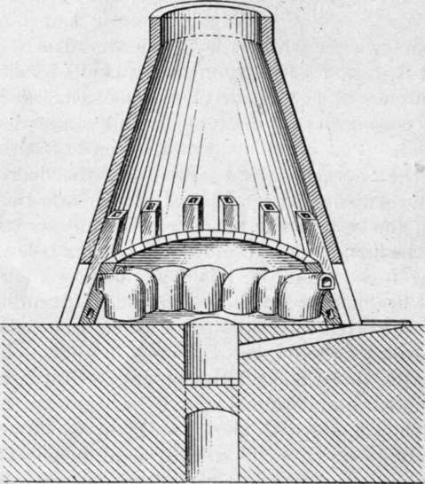
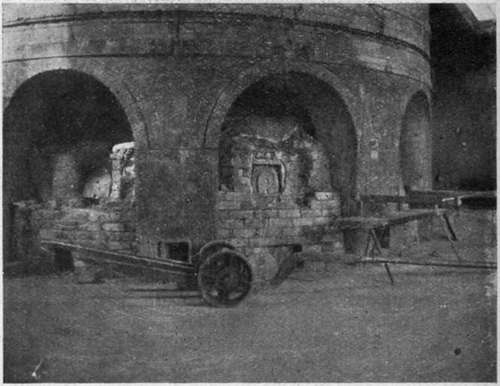

Chapter VIII. Glass House Furnaces
Description
This section is from the book "Glass And Glass Manufacture", by Percival Marson. Also available from Amazon: Glass and Glass Manufacture.
Chapter VIII. Glass House Furnaces
The pots within which the raw materials are melted are set within a strongly heated chamber called the glass furnace. The old circular type of English furnace usually contains six or twelve pots and will be described first. The pots stand in a circle upon a form of hob called the " siege," which constitutes the floor of the furnace. In the centre of this chamber arid below the level of the siege is the " eye " of the furnace, through which the flames come from the furnace fire below. The burning fuel is contained in a circular or cylindrical-shaped fire-box, about 4 ft. deep and 5ft. in diameter, and is supported by a number of strong iron bars across the bottom of the fire-box. Passing under the fire-box, and across the whole width of the glass furnace, there is an underground tunnel called the " cave," each end of which is exposed to the outside air, which is drawn in through the caves by the draught of the chimney cone above the fires. These caves are of sufficient height and width to allow the fireman, or " tizeur," as he is called, to attend to the stirring of the furnace fires from time to time. Using a long hooked bar of iron, he rakes out the dead ashes and clinkers, as they are formed, and stirs the fire through the bars by prodding the fuel with a long poker. The coal is fed upon the furnace fire through a narrow mouth situated in the glass house leading into a chute which runs under the siege, from the glass house floor level towards the fire-box of the furnace. The fuel is pushed down this chute and falls into the fire-box and is fed at intervals of half to three-quarters of an hour, according to the heat desired and the draught allowed.
Above the siege and over the pots is a covering called the crown of the furnace, which is supported by fire-brick pillars. This is built of the most refractory material possible to be obtained, as the hottest flames from the furnace fires beat against this crown and are reverberated downwards upon the surrounding pots. The flames, continuing their course, pass between the pots into small openings or flues leading from the siege floor and passing upwards through the pillars whichare situated between each pair of pots, they then escape from little chimneys leading into the outer dome or conical-shaped structure so familiar to outsiders. This outer truncated cone-shaped structure constitutes the main chimney of the furnace. The furnace chamber containing the pots is constructed entirely within this cone. The fire-clay blocks are carefully shaped, neatly fitted, and cemented together with a mortar made of fine, plastic, raw ground fire-clay mixed to thin paste with water. The presence of any molten glass which escapes from a cracked pot, and the fluxing action of the fuel ashes, cause severe corrosion of the blocks forming the siege and fire-box, and these necessarily have to be made of extra thickness in order to extend the life of the furnace. When the furnace crown or siege becomes badly corroded away, the furnace has to be put out for repair; so generally an auxiliary furnace is kept at hand, in order that it may be started and the workmen transferred from one furnace to the other whilst the repairs are being done.
Interior Of English Type Of Glass-Melting Furnace
The action of the glass upon the siege of the furnace is very active, and any leakage quickly destroys the fire-clay blocks, leaving fissures which gradually increase in size until the blocks are eaten right through. Consequently, every care is taken to preserve the pots from losing metal. If by chance any pot develops a crack through which the metal leaks into the furnace, the glass working is ceased at that particular pot, and every endeavour is made to ladle out what remains of the metal, and so prevent any more running on to the siege and causing further mischief. The metal is ladled out of the pot by means of thick, heavy, iron spoons, with which the hot metal is scooped out of the pot and dropped into a large cauldron containing water. This is very exhausting work, but there is worse trouble still if the metal is allowed to continue to run through the crack in the pot and over the siege into the eye of the furnace, for it then fluxes with the ashes of the fuel, causing them to form into a big mass of conglomerate, which, lying in the fire, interferes with the draught and combustion of the fuel within the furnace, and before the furnace can be got to work properly again has to be cut away, piece by piece, through the firebars whilst hot, until it is all removed. At the sign of any glass running down into the fires and through the bars, the tizeur hurries up to give the word that a pot is leaking in the furnace, and when the pot is isolated the work of ladling the hot metal out into water begins in earnest. A pot which has cracked and leaks is useless for any further work of melting glass, and at a convenient time it has to be withdrawn from the furnace and a new pot must be substituted. Glass-melting pots form a very expensive item in the glass manufacturer's costs; consequently, every care is taken to prevent the pots within the furnace from getting chilled by inadvertently allowing the fires to burn too low or allowing cold air to rush through the bars, through unskilful clinkering and inattention to the furnace fires. Sometimes these furnaces are fitted with a Frisbie Feeder. This is a mechanical filing arrangement fitted underneath the furnace bars, by which the fuel is fed upwards into the furnace box, so that all smoke given off by the fuel baitings has to travel through the hot fuel above, and thereby is more completely consumed, giving better combustion than when the black fuel is thrown on the top of the hot bed of fuel. A mechanically operated piston pushes up small charges of fuel from within a cylindrical-shaped box, which works on a swivel backwards and forwards as the fuel is fed into it.
Exterior View Of English Glass-Melting Furnace - Pot Trolley in foreground
Continue to:
Tags
glass, manufacturing technology, furnace, glassware, wine glass